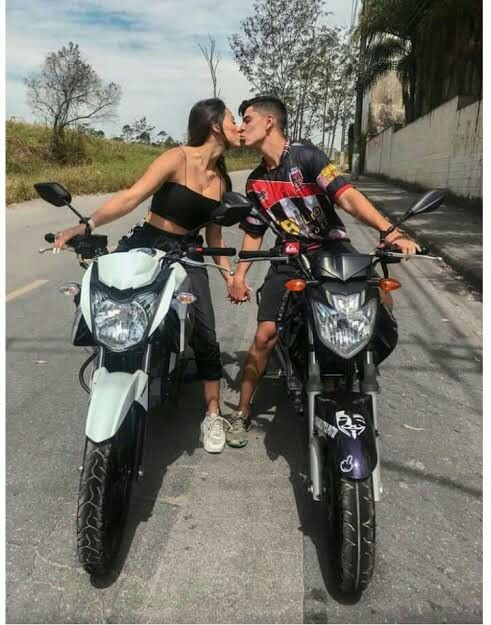
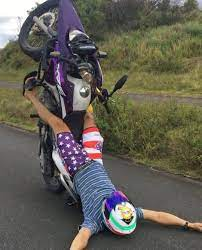
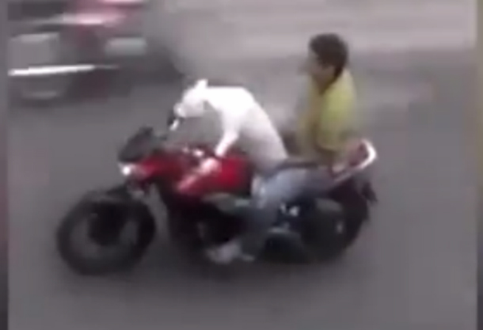
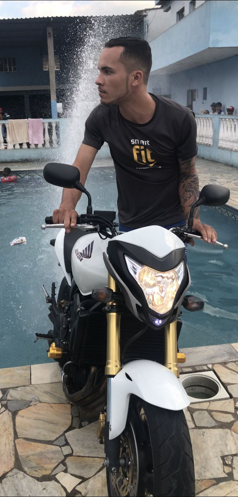

Nossos Clientes
A KleinMotors foi fundada em 2018 com a ideia de proporcionar sempre
a melhor experiência para o cliente. Com esse ideal, chegamos a
atender
mais de 5 mil clientes. Confira abaixo alguns relatos de nossos
clientes com suas motos!
|
|

|
Jorge e Leandra
Um casal apaixonado que decidiu se aventurar na vida em duas rodas
com um entusiasmo contagiante. Ambos financiaram duas
YAMAHAS em nossa loja com uma convicção de impressionar.
Atualmente o casal nos informou que Leandra esta grávida e muito
alegre com a gestação, toda a equipe da KleinMotors parabeniza o
momento do casal!
|
Matheus do Grau
Matheus é um jovem muito responsável e educado, que compareceu em
nossa filial no centro de Guarulhos procurando uma moto que pudesse
auxiliá-lo
em seu esporte radical, nos oferecemos uma HONDA XRE 300 por conta
do seu conforto e resistência em atividades de grande intensidade.
Atualmente fomos informados de que Matheus acabou se acidentando e
destruindo sua XRE, mas sem problemas, pois ele voltará em nossa
loja para comprar outra.
|

|
|

|
THOR e Ramon
Apesar de ser estranho querer transportar animais em uma
motocicleta, acabamos vendendo uma YAMAHA para THOR e Ramon.
Nós não guardamos ressentimentos pelo xixi no meio da loja....
|
Xiquinho
Um dos clientes mais carismaticos, xiquinho chegou na loja com
humildade e curiosidade. Xiquinho verificou todas as motos em
estoque e fez perguntas
estranhas, mas no final tudo deu certo, e a nova CB 600 de xiquinho
esta ajudando muito no seu trabalho como youtuber.
|

|